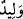
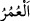
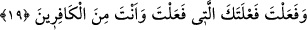
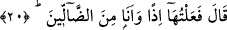
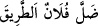

18. (Fir’avn) dedi ki: Biz seni çocukken himâyemize alıp büyütmedik mi?
Hayatının birçok yıllarını aramızda geçirmedin mi?
“(Fir’avn) dedi ki: “Biz seni çocukken himayemize alıp” himâyemizde ve evimizde
“büyütmedik mi?”
Kâşifî der ki: “Yeni doğmuş bir çocukken seni aramızda beslemedik mi?”
Çocuk kelimesi yerine “
” kelimesini kullanması, o zaman Mûsâ (a.s.)’ın doğuma
yakın bir yaşta olmasındandır.
“Hayatının birçok yıllarını aramızda geçirmedin mi?” Uzun yıllar evlerimizde,
saraylarımızda kalmadın mı?
Râgıb el-İsfahânî der ki: “
” az olsun, çok olsun bedenin hayatla mamur olma
müddetinin ismidir.”
Denilmiştir ki: Mûsâ (a.s.) Fir’avn âilesi arasında otuz sene yaşadı. Sonra Medyen’e
gitti ve orada on sene ikamet etti. Sonra Mısır’a geri döndü, otuz sene onları Allah’a
dâvet etti. Fir’avn ve kavminin denizde boğulmalarından sonra elli sene yaşadı. Buna
göre Mûsâ (a.s.)’ın ömrü yüz yirmi yıl olur.
19. Sonunda o yaptığın (kötü) işi de yaptın. Sen nankörün birisin!
“Sonunda o yaptığın (kötü) işi de yaptın.” Fir’avn’un fırıncısı, ismi Kayşun olan
kıbtîyi öldürdün.
Fir’avn Mûsâ (a.s.)’ı büyütüp olgunluk yaşına ulaştırması gibi ona yaptığı iyilikleri
saydıktan sonra onu fırıncısını öldürmekle ayıpladı ve bu suçun büyüklüğünü dile
getirdi.
Şeyhzâde der ki: Bu fiili büyütmesi, isminin açıkça zikredilmemesinden anlaşılır.
Çünkü bazen bir şeyin belirsiz ve kapalı bırakılmasından o işin büyüklüğü kasdedilir.
“Sen nankörün birisin!” Yâni sen benim nimetime nankörlük eden ve üzerindeki
terbiye hakkımı inkâr edenlerden birisin. Çünkü has adamlarından birine kasdettin ve
onu öldürdün.
20. (Musa) dedi ki: Ben o işi o anda sonunun ne olacağını bilmeyerek yaptım.
Musa “dedi ki: “Ben o işi o anda” yani öldürme fiilini yaptığımda “sonunun ne
olacağını bilmeyerek yaptım.” “
” Falan kimse yolu şaşırdı, yanıldı
demektir. Yâni, ‘Kasıtsız olarak doğru yolu kaybettim ve şaşırdım. Tıpkı bir kuşa ok